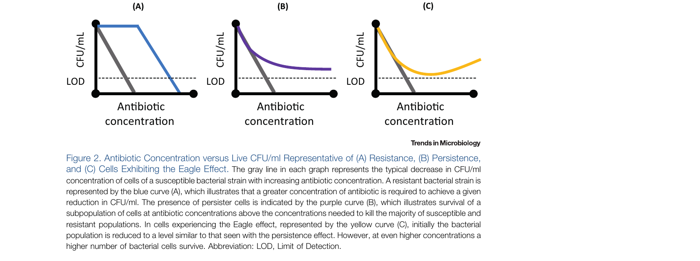

本ページで使用する略語一覧
| 略語 | 正式名称・日本語訳 |
| Eagle effect | イーグル効果 — 最適殺菌濃度（OBC）を超える高濃度抗菌薬で逆説的に殺菌活性が低下する現象 |
| MIC | Minimum Inhibitory Concentration — 最小発育阻止濃度 |
| MBC | Minimum Bactericidal Concentration — 最小殺菌濃度（初期菌量から3-log10以上の減少） |
| OBC | Optimal Bactericidal Concentration — 最適殺菌濃度（最大殺菌効果が得られる濃度） |
| CFU | Colony-Forming Units — コロニー形成単位（細菌数の単位） |
| ROS | Reactive Oxygen Species — 活性酸素種 |
| PKC | Protein Kinase C — プロテインキナーゼC（真菌の細胞壁シグナル伝達経路） |
| HOG | High-Osmolarity Glycerol — 高浸透圧グリセロール応答経路 |
| TA | Toxin-Antitoxin — トキシン・アンチトキシンシステム（持続性細胞形成に関与） |
| MDK99 | Minimum Duration of Killing 99% — 99%の菌を死滅させるのに要する最短時間 |
| FACS | Fluorescence-Activated Cell Sorting — 蛍光活性化細胞選別（フローサイトメトリー） |
| Persistence | 持続性 — 致死濃度に対して生存可能な細菌サブポピュレーションの能力。非遺伝性で休眠状態 |
SECTION 1 発見の歴史と定義
1948年 Harry Eagle の発見
1948年、Harry Eagle はペニシリンの殺菌活性をタイムキルアッセイで研究中に奇妙な現象を観察した。通常、抗菌薬濃度を上げるほど生存菌数は減少するが、一部の細菌株では最適殺菌濃度（OBC）を超える高濃度ペニシリンへの暴露で、逆説的に生存菌数が増加することを発見した。この現象はのちに「イーグル効果（Eagle effect）」と名付けられた。
なお、Kirby と Garrod はその3年前の1945年にも類似の観察を報告していた。ペニシリン1000倍高濃度でブドウ球菌の生存が増加したが、当時は「抗菌薬製剤中の耐性菌混入」として解釈されていた。
70年間の謎：初報告から約70年が経過したが、イーグル効果の根本的なメカニズムはいまだ十分に解明されていない。これはその複雑性と再現性の難しさに起因する。
Figure 1：MBC測定アッセイにおけるイーグル効果の検出
Figure 1. タイムキルまたは最小殺菌濃度（MBC）アッセイにおけるイーグル効果の検出。
上段： MICブロスマイクロダイリューション（96ウェルプレート）の模式図。陰影は菌の増殖（濁度）を示す。イーグル効果はMICアッセイのみでは検出できない。
下段： 殺菌性抗菌薬のMBC測定における3パターン。
（A） MBC = MIC；
（B） MBC > MIC（通常パターン。MBC以上の濃度では生存菌数は減少または同等）；
（C）イーグル効果： MBCを超える濃度で逆説的に生存菌数が増加する。
用語の整理
| 用語 | 定義 |
|---|---|
| Eagle effect イーグル効果 |
OBC（最適殺菌濃度）を超える抗菌薬濃度で、逆説的に微生物の殺菌率が低下する現象。「paradoxical growth（逆説的増殖）」とも呼ばれる（特に真菌分野） |
| MBC | 初期菌量を3-log10（99.9%）以上減少させる最低濃度。MICと同じ場合もあれば、数倍高い場合もある |
| OBC | 最大殺菌効果が得られる濃度。イーグル効果はOBCを超える濃度で生存菌数が増加することで定義される |
| Persistence 持続性 |
致死濃度の抗菌薬に対して生存可能な細菌サブポピュレーションの能力。非遺伝性（休眠状態からの回復後は親株と同じ感受性プロファイルを持つ） |
| Tolerance 耐容性 |
細菌集団全体が高濃度抗菌薬に対して一時的に生存可能な能力。MICに変化はないが、MDK99が延長する。特定の環境ストレス（表現型）または遺伝子変異（遺伝子型）で誘発される |
SECTION 2 対象菌種と抗菌薬（Table 1）
Table 1：高濃度で逆説的に殺菌活性低下を示す抗菌薬と対象微生物
イーグル効果はグラム陽性菌・グラム陰性菌・抗酸菌に対して、細胞壁合成阻害・DNA合成阻害・RNA合成阻害・タンパク合成阻害・細胞膜透過性変化など多様な作用機序を持つ抗菌薬クラスで報告されている。
| 抗菌薬クラス | 作用機序 | 具体的薬剤 | 対象微生物 |
|---|---|---|---|
| β-ラクタム系 細胞壁合成阻害 |
細胞壁合成阻害 | ペニシリン | S. aureus・Group A/B/C Streptococcus・E. faecalis |
| アモキシシリン | E. faecalis・C. diphtheriae（非毒素産生株） | ||
| アモキシシリン/ クラブラン酸 |
E. faecalis（臨床分離株） | ||
| カルバペネム系 （イミペネム・メロペネム） |
S. aureus | ||
| セフメノキシム | Proteus vulgaris | ||
| クロキサシリン・ ベンジルペニシリン |
S. aureus | ||
| BAL9141（セファロスポリン系） | S. aureus | ||
| グリコペプチド系 細胞壁合成阻害 |
細胞壁合成阻害 | バンコマイシン | C. difficile・E. faecalis |
| テラバンシン | C. difficile | ||
| テイコプラニン | E. faecalis | ||
| キノロン系 DNA合成阻害 |
DNA合成阻害 + ROS産生による代謝ストレス | シプロフロキサシン | E. coli・S. aureus・S. pneumoniae・P. aeruginosa・M. bovis BCG |
| モキシフロキサシン | M. tuberculosis・M. smegmatis（非増殖性） | ||
| ナリジクス酸 | E. coli・P. mirabilis | ||
| エノキサシン | S. aureus | ||
| ペフロキサシン | E. coli | ||
| 各種キノロン | Mycobacterium属各種 | ||
| アミノグリコシド系 タンパク合成阻害 |
タンパク合成阻害 | アミカシン・ゲンタマイシン・トブラマイシン | E. coli・K. pneumoniae・P. aeruginosa |
| アンサマイシン系 RNA合成阻害 |
RNA合成阻害 | リファンピシン | S. pneumoniae |
| ポリミキシン系 細胞膜透過性変化 |
細胞膜透過性変化 | ポリミキシンB | Acinetobacter baumannii |
臨床的に重要な特記事項
C. difficile とバンコマイシン： バンコマイシンはMICの20〜2000倍という高濃度で殺菌活性が低下することが複数の試験で示されている。経口バンコマイシンは結腸内でMIC超過濃度に達するため、この静菌的活性がC. difficile感染症の治療失敗に寄与している可能性がある。同じ抗菌薬クラス（リポグリコペプチド）のテラバンシンはイーグル効果を示したが、テイコプラニン・ダルババンシン・オリタバンシン・ラモプラニンおよびメトロニダゾール・フィダキソマイシンはC. difficileに対してイーグル効果を示さなかった。
M. tuberculosis とモキシフロキサシン： M. tuberculosis に対してモキシフロキサシン0.5 mg/mLが最適殺菌濃度だったが、16倍高濃度（8 mg/mL）では殺菌活性がコントロール比で1.5 log低下した。同じキノロン系でも非増殖性M. smegmatisに対してはイーグル効果が観察されたが、活発に増殖している培養では観察されなかった。
SECTION 3 提唱されているメカニズム
①オートリシン（自己融解酵素）障害仮説
β-ラクタム系抗菌薬による殺菌にはオートリシン（ムレイン加水分解酵素）が必要だが、高濃度β-ラクタムはこのオートリシンの機能を妨害し、細胞壁欠損細胞を形成することで生存率が逆説的に上昇すると考えられている。
Nishino と Nakazawa による研究では、S. aureus においてセファロシン0.5 mg/mLで41%の溶菌が生じた一方、800 mg/mLではわずか11%の溶菌だった。E. faecalis においては、高濃度ペニシリンへの暴露後に活性が低下するオートリシンを保有する株が存在し、さらに高濃度では細胞成長とペプチドグリカン合成が停止するため殺菌活性が低下することが示された。また、イーグル効果は対数増殖期よりも遅滞期（lag phase）で生じやすいことも示されている。
②β-ラクタマーゼ誘導仮説
P. vulgaris に対するセフメノキシムの研究から、高濃度の薬剤がβ-ラクタマーゼ産生を誘導し、これが殺菌活性の低下をもたらすことが示された。β-ラクタマーゼ欠損変異株やβ-ラクタマーゼ阻害剤を添加した系ではイーグル効果は消失した。この仮説は同じクラスの異なる抗菌薬が異なるβ-ラクタマーゼとの親和性・安定性を持つため、同クラス内でもイーグル効果を示すものと示さないものが混在することを説明できる。
in vivo 確認： マウスのP. vulgaris 腹膜感染モデルでセフメノキシム3.13 mg/kgでは43%生存、50 mg/kgでは20%生存と、高用量で効果が低下した。β-ラクタマーゼ非産生株ではこの差は認められなかった。
③タンパク合成阻害とROS減少（キノロン系）
キノロン系抗菌薬は主にDNA合成阻害として知られるが、高濃度でのイーグル効果はタンパク合成阻害と関連することが提唱されている。Luan らは E. coli において、タンパク合成阻害に伴うROS産生低下が逆説的生存と相関することを報告した。同様に、M. tuberculosis に対する高濃度モキシフロキサシンでも、タンパク合成の低下が殺菌活性低下の原因として示唆された。
SECTION 4 動物モデルでの確認
In vivo でのイーグル効果の証拠
イーグル効果のほとんどはin vitroの観察であるが、複数の動物モデルがin vivoへの転換を支持している。
| 動物モデル | 感染症・抗菌薬 | 結果 |
|---|---|---|
| マウス 腹膜感染 |
P. vulgaris セフメノキシム |
3.13 mg/kg → 43%生存；50 mg/kg → 20%生存（高用量で悪化）。β-ラクタマーゼ非産生株では差なし |
| ラット 細菌性心内膜炎 |
S. aureus クロキサシリン |
高濃度で殺菌活性低下と生存率低下 |
| ウサギ 心内膜炎 |
C. diphtheriae アモキシシリン |
高濃度で殺菌活性低下と生存率低下 |
| ウサギ 肺炎球菌性髄膜炎 |
S. pneumoniae リファンピシン |
20 mg/kg/h は 10 mg/kg/h と比べて殺菌速度・細菌力価低下速度が劣った |
| マウス 肺炎球菌敗血症 |
S. pneumoniae オーラノフィン・MH05 |
10 mg/kg で 1 mg/kg（株48）または 5 mg/kg（高毒性株3498）より効果低下。低用量群で生存率高く、血中菌量も生存率と相関 |
SECTION 5 ヒト症例報告（Box 1）
Box 1：ヒト患者でのイーグル効果の症例報告
臨床上の示唆： ペニシリン高用量で改善しない細菌性心内膜炎では、ペニシリンの用量を減量すること（あるいはアミノグリコシドとの併用）でイーグル効果を回避できる可能性がある。
細菌性心内膜炎でイーグル効果が疑われた2例が報告されている。
症例1： ペニシリンで治療中、用量を半量にしたところ血清殺菌活性が増強し、臨床的改善が得られた。
症例2（乳児）： アミノグリコシドとの併用療法中にペニシリン用量を減量したところ病状が改善した。ペニシリン単独のイーグル効果か、減量による効果かは確定的でないが逆説的効果の可能性がある。
これらの報告はエビデンスとして限定的だが、イーグル効果が臨床的に意義を持ちうること、抗菌薬治療中に考慮すべき現象であることを示している。
SECTION 6 真菌でのイーグル効果の概要
真菌における逆説的増殖（Paradoxical Growth）
真菌分野ではイーグル効果は「paradoxical growth（逆説的増殖）」と呼ばれることが多い。1988年にCilofungin（C. albicans・C. tropicalisに活性を持つ抗真菌薬）で最初に報告された。現在では多様なCandida属およびAspergillus属で確認されている。
| 対象 | 詳細 |
|---|---|
| Candida属 | C. albicans・C. dubliniensis・C. parapsilosis・C. tropicalis・C. glabrata・C. orthopsilosis |
| Aspergillus属 | 複数のAspergillus種 |
| 主な薬剤 | エキノキャンジン系（カスポファンギン・ミカファンギン・アニデュラファンギン）、例外的にフルコナゾール（C. albicans） |
| バイオフィルム | 真菌バイオフィルムでも逆説的増殖が観察されている |
四相性パターン： Candida属のカスポファンギンによる逆説的増殖は四相性パターン（quadriphasic）を示す：①MIC未満での増殖 → ②MIC付近での増殖阻害 → ③supra-MIC濃度での増殖再開（イーグル効果域、4〜32 µg/mL）→ ④さらに高濃度での増殖阻害。すなわち最適殺菌濃度が2つ存在する。
真菌でのメカニズム：キチン代償合成
エキノキャンジン系はβ-1,3-D-グルカン合成を阻害するが、高濃度エキノキャンジン暴露下での逆説的増殖細胞は、β-1,3-グルカン含量が著しく低下する代わりにキチン含量が増加し、細胞壁の完全性を代償的に維持する。キチン合成の阻害はカスポファンギン誘発の逆説的増殖を消失させることが確認されており、キチン合成の制御が真菌の逆説的増殖における生存機構であると考えられている。
逆説的増殖に関与するシグナル経路として以下が挙げられる：
・PKC（プロテインキナーゼC）経路： 高濃度カスポファンギン暴露後にMKC1タンパクキナーゼの上方制御が確認された
・Ca²⁺-カルシニューリンシグナル経路： A. fumigatus ではカスポファンギン応答としてキチン合成遺伝子が上方制御され、この経路を阻害すると逆説的増殖が消失した
・HOG（高浸透圧グリセロール）経路： 高濃度抗真菌薬などストレス時に活性化し細胞壁完全性を維持する
・Hsp90（熱ショックタンパク質90）： Hsp90阻害薬（ラジシコール）の添加でミカファンギン誘発逆説的増殖が減弱した
なお、真菌の逆説的増殖は抗真菌薬耐性変異も、β-1,3-グルカン合成酵素をコードするFKS1遺伝子変異も伴わないことが示されている。
SECTION 7 臨床的意義：真菌の逆説的増殖は問題か？
真菌での臨床的意義：議論あり
現在のコンセンサス： 真菌における逆説的増殖は、現在の臨床投与量ではin vivoに直接影響しない可能性が高い。エキノキャンジンは主要な抗真菌薬クラスとして有効性を維持している。
Candida属： 逆説的増殖が生じる濃度範囲（4〜32 µg/mL）は、臨床での血清カスポファンギン濃度（トラフ約2 µg/mL、ピーク約8 µg/mL）と重なる部分があるため、原理的には臨床関連性が懸念される。
Aspergillus属： 現行の投与量はイーグル効果を示す濃度より高く、in vitroでの活性に対応する。真菌種によっては、血清の存在が逆説的増殖を消失させる（Box 2参照）。
動物モデルとRCT： カスポファンギンのマウス侵襲性肺アスペルギルス症モデルでは、高用量（4 mg/kg）群で真菌量が増加したが生存率は低用量（1 mg/kg）群と有意差なし。侵襲性カンジダ症のミカファンギン・カスポファンギンのRCTでは、低用量・高用量群で有効性に有意差なし。
Shields らの研究では、C. albicans 血流感染臨床分離株8株において、通常の培地でカスポファンギン臨床関連濃度で逆説的増殖が観察された。しかし培地に50%ヒト血清を添加すると、最大64 µg/mL（臨床でのカスポファンギンピーク濃度の8倍）までの濃度でも逆説的増殖が消失した。また50%血清存在下ではカスポファンギンのMICが2倍上昇し、10%血清添加では逆説的増殖が生じる濃度がより高い濃度へシフトした。エキノキャンジン系はタンパク結合率>95%と高いが、この高タンパク結合率が逆説的増殖の消失に直接対応するわけではない（各薬剤でin vitro活性への影響が異なる）。カスポファンギンはエキノキャンジン系の中で血清による影響が最小であり、逆説的増殖との関連性も最も高い薬剤でもある。
SECTION 8 Tolerance・Persistence の定義と特徴
Tolerance（耐容性）
Tolerance とは細菌集団全体が高濃度抗菌薬下で一時的に生存可能な状態であり、MICに変化はないが MDK99（99%殺菌に要する最短時間）が延長する。Tolerance には表現型（特定の環境ストレスで誘発）と遺伝子型（遺伝子変異による）の2種類がある。
重要なことに、Tolerance の獲得はその後の耐性獲得に先行することが示されている。E. coli で繰り返しの抗菌薬暴露後、まず Tolerance 変異が生じ、その後耐性変異が出現するという報告があり、Tolerance の臨床的意義が高まっている。
Tolerance が確認されている主な病原体：A. baumannii・P. aeruginosa・E. coli・S. aureus・S. pneumoniae・M. tuberculosis
Persistence（持続性）
Persistence とは細菌サブポピュレーションが致死濃度の抗菌薬暴露後も生存できる能力で、1944年 Bigger が初めて発見した。タイムキルアッセイでは典型的な二相性殺菌曲線を示す：最初は大部分の菌が同様の速度で死滅し、その後少数のサブポピュレーション（持続性細胞）が高濃度でも生存し続ける。
持続性は非遺伝性であり、抗菌薬暴露停止・再増殖後の菌は親株と同じ感受性プロファイルを持つ。持続性細胞は難治性感染症の一因とされ、数学モデルによれば持続性細胞の存在は治療期間を延長させ、治療失敗を促進しうる。
SECTION 9 イーグル効果 vs 持続性：異同の整理
Figure 2：耐性・持続性・イーグル効果の違い（概念図）

Figure 2. 抗菌薬濃度 vs 生存CFU/mL の代表曲線。灰線：感受性株の典型的な減少カーブ。 （A）耐性（青線）： 同じCFU/mL減少を達成するためにより高い濃度が必要（MIC上昇）。 （B）持続性（紫線）： 大部分は感受性株と同様に死滅するが、サブポピュレーションが高濃度でも生存。 （C）イーグル効果（黄線）： OBC付近までは持続性に類似した減少を示すが、さらに高濃度で逆に生存菌数が増加する。略語：LOD, Limit of Detection（検出限界）。
各カーブの臨床的意味：
| 現象 | CFU/mL カーブの特徴 |
|---|---|
| 感受性株（灰線） | 濃度上昇に伴って単調減少。標準的な濃度依存性殺菌カーブ |
| 耐性（青線） Resistance |
同一のCFU/mL減少を得るためにより高い濃度が必要。曲線は感受性株より右方にシフト。MICが上昇する |
| 持続性（紫線） Persistence |
大部分の菌は感受性株と同様に死滅するが、高濃度でもサブポピュレーションが生存し続ける（二相性曲線） |
| イーグル効果（黄線） Eagle Effect |
OBCまでは持続性と同様に減少するが、さらに高い濃度で逆に生存菌数が増加する（U字型反転） |
イーグル効果と持続性の共通点
両現象は以下の点で類似する：
① 細胞壁構造の表現型変化： 細胞壁合成阻害薬暴露後に、持続性細胞でも一部のイーグル効果細胞でも細胞壁構造の変化が観察されている（例：M. tuberculosis の細胞壁欠損で抗菌薬耐容性が増加）
② 高菌量・高接種量での増強： Eagle自身も高菌量（高接種量 = 確立した感染症を模倣）でイーグル効果が生じることを観察しており、これは持続性でも「静止期・高菌量でのpersister形成促進」と並行する
③ 抗菌薬ターゲットの減少： Eagle はペニシリン効果減弱の原因として細菌増殖の低下（= 細胞壁合成阻害薬のターゲット減少）を仮説として提示した。これは持続性での「代謝不活性化によるターゲット減少」と概念的に類似する
④ MDK99の延長： Eagle の初期報告で、高濃度ペニシリンへの暴露下では MDK99.9 が低濃度より延長することが示されており、これは持続性の特徴と一致する
イーグル効果と持続性の本質的な違い
最重要の鑑別点： 持続性では高濃度ほど殺菌が強まる（dose-dependent persistence）が、イーグル効果では高濃度ほど生存菌数が増加する。これが両者を区別する根本的な違いである。
持続性（dose-dependent）： 耐性因子を一時的に過剰発現するサブポピュレーションが生存するが、さらに高い抗菌薬濃度では生存は低下する。高濃度 = より強い殺菌効果。
イーグル効果： OBCを超える抗菌薬濃度に依存して細胞死の速度が低下し、むしろ生存菌数が増加する。高濃度 = 逆説的に生存菌数増加。
その他の違い： 持続性においてE. coli のpersister細胞は非持続性細胞と同等の抗菌薬ダメージを受けるが、抗菌薬停止後のDNA修復機構の利用可能性が生存の鍵であることが示されており、これはイーグル効果で提唱されているターゲット減少仮説とは異なる。
今後の研究課題
FACS・DNAシーケンシング・マイクロフルイディクス・ライブセル顕微鏡など、持続性細胞の研究に使われてきた最新技術がイーグル効果細胞には未適用のままである。イーグル効果を研究する上で重要な前提として、特定の菌株-抗菌薬ペアで再現性の高いイーグル効果を示す系の確立が必要である。今後の課題として以下が挙げられる：
・イーグル効果は分子レベルで持続性と異なるのか？
・異なる抗菌薬クラスにわたる保存されたメカニズムは存在するのか？
・持続性の研究手法はイーグル効果細胞の研究に転用できるか？
・一部の菌種でイーグル効果が生じやすい理由は何か？
SECTION 10 併用療法（Box 4）
Box 4：イーグル効果を克服するための併用療法
イーグル効果が一部のβ-ラクタム系治療失敗に関与している可能性を踏まえ、以下の知見が蓄積されている：
1986年の症例報告： 心内膜炎においてペニシリン + ゲンタマイシンの併用で治療が成功した。イーグル効果がペニシリン単独の回復を妨げていた可能性があり、β-ラクタムにアミノグリコシドを組み合わせることがイーグル効果を克服する方策として初めて示唆された症例。
β-ラクタム ＋ タンパク合成阻害薬の組み合わせ： 複数の研究で、β-ラクタムにタンパク合成阻害薬を組み合わせることで良好な治療結果が得られることが示されている。これはタンパク合成阻害によりイーグル効果の原因となるメカニズム（ROS減少など）に干渉できるためと解釈される。
持続性細胞に対する併用療法のin vitroエビデンス： ダプトマイシン + セフォペラゾン + ドキシサイクリン（B. burgdorferi persisters）、一酸化窒素によるpersister形成抑制、グルコース補充 + ダプトマイシン、新規合成レチノイド + ゲンタマイシン、マンニトール + ゲンタマイシン（マウスバイオフィルム慢性感染モデル）などが有効性を示している。ただし、これらのin vitro知見を難治性感染症の臨床アウトカム改善に結び付けるエビデンスはまだ存在しない。
総括的メッセージ
持続性細胞および抗菌薬耐容性は、抗菌薬治療失敗や耐性獲得における役割が明らかになるにつれて注目を集めている。これらに比べてイーグル効果の研究は少ないが、イーグル効果と持続性は現在の証拠から見て別個のメカニズムによる微生物の生存戦略と考えられる。
イーグル効果は微生物が抗菌薬治療に対して持つ多様な回避メカニズムの一例である。そのメカニズムと臨床的意義のさらなる解明が、治療ガイドラインの改定・臨床実践の変化・新薬開発につながる可能性がある。
臨床での注意点： β-ラクタム系で期待通りの効果が得られない難治性感染症（特に心内膜炎、難治性C. difficile）では、高用量投与でむしろ効果が低下している可能性（イーグル効果）を念頭に置き、用量の最適化や併用療法の検討が考慮される。
SUMMARY 本論文のキーメッセージ
出典：Prasetyoputri A, Jarrad AM, Cooper MA, Blaskovich MAT. The Eagle Effect and Antibiotic-Induced Persistence: Two Sides of the Same Coin? Trends in Microbiology. 2019 Apr;27(4):339–354.
DOI：https://doi.org/10.1016/j.tim.2018.10.007
本資料は教育目的で作成したサマリーです。診断・治療方針の決定には必ず原典ガイドラインを参照してください。
制作：ICU 関谷